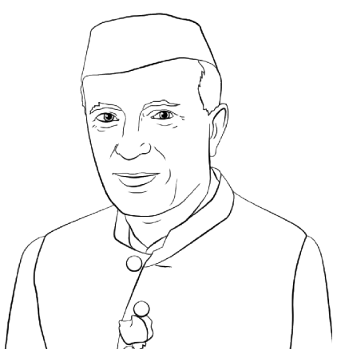

1556–1605
Copper coin minted in Gorakhpur district under Akbar's rule


.svg)


More information here.
More information here.
More information here.
More information here.
1. Shivam Vij chronicles his time spent with V.S. Naipaul during his visit to Lucknow in 2009. He brings up Naipaul's Gorakhpuri lineage and notes the author's rather lukewarm reaction it.
2. Read more about the Dubey Brahmins who lived in Pharenda - a small bazaar that lies mid-way on the road between Sunauli on the Nepal border and Gorakhpur,
From Godard goes to Gorakhpur, Syncretic cinema in saffron city, and A Marquee in Gorakhpur, mainstream media has tracked Gorakhpur Film Festival's attempt at taking the best of cinema beyond India's metros , trying to change the very idea of cinema, andmaking it more accessible to common people over the years.
Amrita Sher-Gil’s time in Gorakhpur remains one of the lesser-known chapters of the artist’s life, with relatively little about it documented in the public domain. During her two-year stay there, she produced some of the most significant works of her career, including Women on the Charpoy, The Bride, Swing, Resting, Ladies’ Enclosure, and Mother India. Read more about Priyanka Dubey’s discoveries here